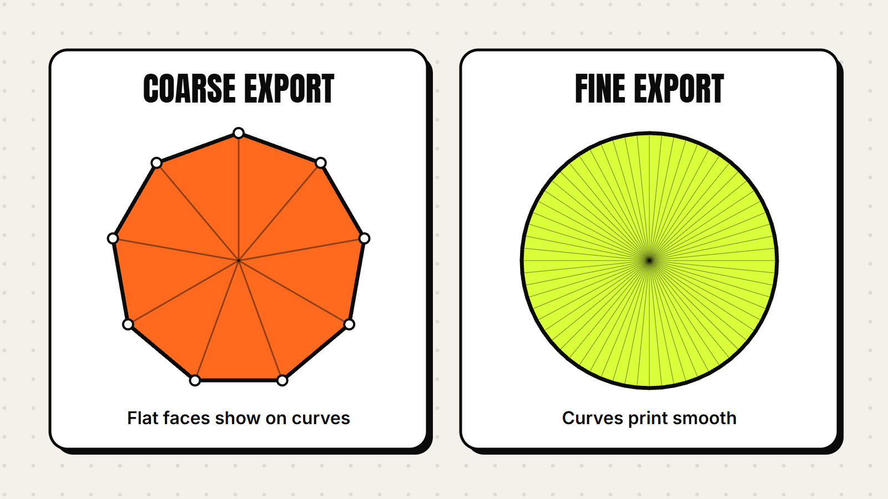
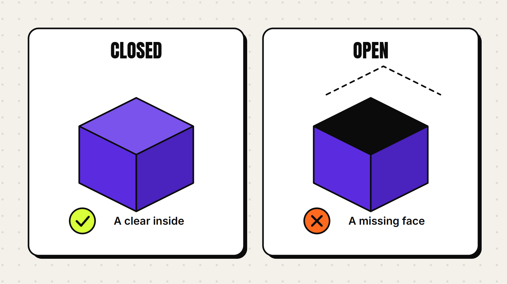

A clean file is the quickest route to a good print. Many delays come from a handful of avoidable issues: the wrong units, a surface with holes, walls too thin to build, or a format that lost detail on the way out. This guide shows how to choose a format, export it well, and check it before you send it.
| Format | What it holds | Good to know |
|---|---|---|
| STL | The surface as triangles | Works almost everywhere. Carries no units or colour in the standard form. |
| 3MF | Triangles plus units, and optionally colour and print settings | A modern choice that avoids unit mix-ups. |
| OBJ | Triangles or polygons, can link to colour files | Common in art and game software. Send the material files with it. |
| STEP (.step, .stp) | Exact CAD surfaces | Best for engineering parts that may need editing. |
| IGES (.iges, .igs) | CAD surfaces, an older standard | Use STEP instead if your software offers both. |
If your software exports 3MF, it is a sound default. If you designed an engineering part in CAD, send STEP, and add a 3MF or STL as a visual reference. We accept STL, 3MF, OBJ, STEP, and IGES files with a quote request, up to 300 MB per file.
An STL file stores numbers without saying what they measure. A part drawn as 2 inches wide can arrive as 2 mm. Before exporting, set your project to millimetres. After exporting, reopen the file or load it into a free slicer and check one dimension you know.
Tip: Write the overall size in your message, for example "80 x 40 x 25 mm". It takes a moment and catches unit errors immediately.
STL, 3MF, and OBJ describe curves with flat triangles. Too few triangles and a round part prints with visible facets. Too many and the file grows huge without any visible gain, because the printer cannot reproduce detail smaller than its nozzle and layers.

Most software offers coarse, medium, and fine presets. Fine is a good starting point. If you see flat bands on a curve in the preview, raise the setting. If the file is enormous for a small object, lower it.
A printer needs to know what is inside the part and what is outside. A printable mesh is closed, with no gaps, and every edge shared by exactly two faces. People call this watertight or manifold.

Common faults include:
Most 3D tools and slicers can find these and repair simple ones. Always look at the layer preview after a repair, because automatic fixes sometimes fill a gap that was meant to stay open.
A perfect mesh can still be unprintable. Look at wall thickness, overhangs, clearances, and small text. Our guide to designing for print gives starting numbers. If parts must fit together or fit an existing object, say which dimensions are critical.
A sketch, a photo, or a reference image is a fine start. Add rough measurements, say what the object is for, and mention anything it must hold or fit onto. JPG, PNG, and PDF files work for this. We model an original design from your idea through the design service.
Downloading a model does not always give you the right to have it made. Check the licence on the page you got it from. Some licences forbid commercial use or paid printing. Characters, logos, and brand designs usually belong to someone else. We print files you own or have permission to use, and we do not print licensed characters without written permission. We also refuse weapons and parts meant to bypass locks.
Menu names change between programs and versions, so check your software's help pages. Whatever you use, open the exported file once more before sending it. What you see there is what the printer will receive.
"bracket_v3_80mm.stl" is far more helpful than "final_final.stl". Along with the file, include:
Ready? Upload it on the quote page, where you can preview an STL before sending. To see what happens afterwards, read how to order a custom print.